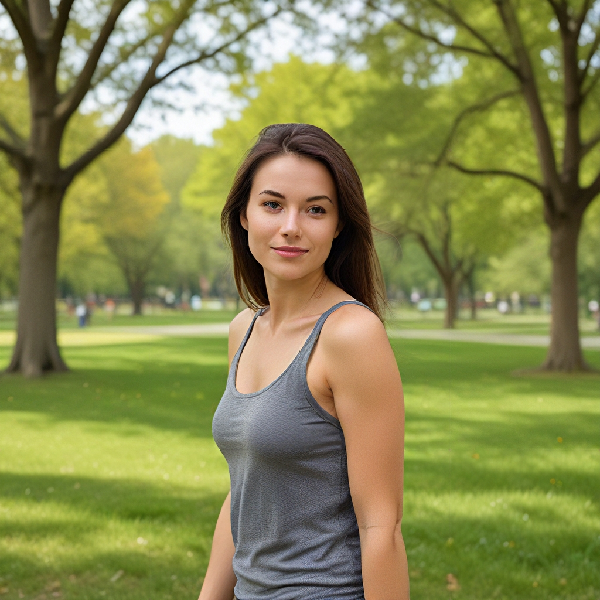

重光特性使用指南
AiCasso中的重光特性非常酷！它让你只需几个词就能改变图像中的光线。想要阳光在背后还是侧面柔和的光？没问题！只需描述一下，AiCasso会处理剩下的。
工作原理：
输入图像：

使用的提示：
"让阳光在背后"
结果：
可选调整
如果你想要更具冒险精神，并想为你的重光添加一些风格，这里有一些可以调整的内容：
- 负面提示：想要避免某些东西？你可以告诉AiCasso 不 要包含什么。但别担心，如果你留空，AiCasso只会专注于你想要的内容。
- 光线方向：你可以指定光线应该来自哪里——左、右、上、下，甚至完全没有。默认情况下，光线来自左侧。
- 引导比例：这有助于AiCasso遵循你的描述。比例范围从1到20，默认值为7。数字越高，AiCasso越能遵循你的提示。
- 高分辨率比例：想让你的图像更加生动？这控制清晰度。默认值为1.5，但你可以设置在1.0到2.0之间，以获得更清晰的图像。
- 去噪级别：有两个级别——低分辨率和高分辨率。这些控制最终图像的平滑度或细节。你可以将低分辨率去噪级别设置在0.0到1.0之间（默认值为0.9），高分辨率在0.0到1.0之间（默认值为0.5）。
- 步骤数量：这是AiCasso打磨图像所需的步骤数量。默认值为50，但你可以选择20到50步。
记住，这些调整都是完全可选的！AiCasso在理解你想要什么方面相当不错，所以只需用你自己的话描述你的愿景，它就会施展魔法。无需在语法或细节上做到完美——尽情享受，看看你能创造出什么吧！